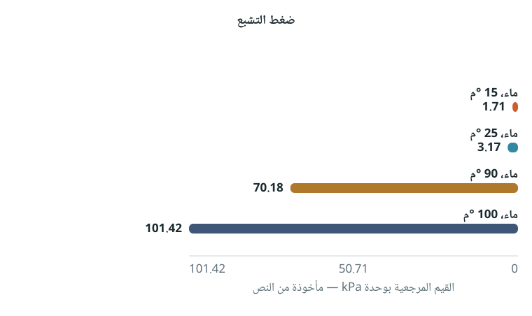

ضغط التشبع
Saturation Pressure
الضغط الذي يتوازن عنده البخار مع سائله عند درجة حرارة معلومة؛ دالة في الحرارة وحدها، وتزداد سريعًا غير خطيًّا.
ضغط التشبع هو الضغط الذي يتوازن عنده البخار مع سائله عند درجة حرارة معلومة، وهو حدّ بدء التكاثف إذا زاد الضغط أو انخفضت الحرارة، وحدّ بدء التبخير إذا نقص الضغط. وهو للمادة النقية دالة في الحرارة وحدها: P_sat = P_sat(T). قيمه للماء من الجدول A–4: 1.7057 كيلوباسكال عند 15 °م، و3.1698 عند 25 °م، و70.183 عند 90 °م، و101.42 عند 100 °م. والزيادة سريعة غير خطية: بين 15 و100 °م ترتفع الحرارة 85 كلفن بينما يتضاعف الضغط نحو 59 مرة. ولهذا يغلي الماء عند 100 °م تحت الضغط الجوي القياسي، ويُستخدم ضغط التشبع في تعريف الرطوبة النسبية وفي تحديد ظروف التكاثف في المكثفات والمبادلات.
كيف تعمل الظاهرة؟
في السائل تخرج جزيئات من السطح باستمرار وتحمل طاقة كافية للتغلب على التجاذب، وفي الوقت نفسه تعود جزيئات من البخار إلى السطح. وعند ضغط معين يتساوى معدل الخروج والعودة فيصير البخار مشبعًا، وذلك الضغط هو ضغط التشبع عند تلك الحرارة. وارتفاع الحرارة يزيد نسبة الجزيئات التي تملك طاقة الخروج، فيزيد ضغط البخار المتوازن زيادة أسّية تقريبًا. ولهذا لا يتحدد التكاثف بالحرارة وحدها: عند ضغط جزئي أعلى من P_sat(T) يتكاثف البخار حتى يعود إلى قيمة التوازن.
العلاقة بالأرقام
الجدول A–4 يعطي للماء بالكيلوباسكال: 1.7057 عند 15 °م، 3.1698 عند 25 °م، 70.183 عند 90 °م، 101.42 عند 100 °م، والوحدة مصرَّح بها مع كل قيمة. ويُتحقق من اتساق الجدول بمعادلة كلاوزيوس–كلابيرون: ln(P₂/P₁) = (h_fg/R)(1/T₁ − 1/T₂). بين 15 و25 °م: ln(3.1698/1.7057) = 0.6202، وفرق مقلوب الحرارة (1/288.15 − 1/298.15) = 1.165×10⁻⁴ كلفن⁻¹، فيكون h_fg = 461.5×0.6202/1.165×10⁻⁴ = 2,458 كيلوجول/كغ، وهو ما يوافق الحرارة الكامنة عند 20 °م. وبين 25 و100 °م: ln(101.42/3.1698) = 3.4656 وفرق مقلوب الحرارة 6.741×10⁻⁴، فيكون h_fg = 461.5×3.4656/6.741×10⁻⁴ = 2,372 كيلوجول/كغ.
مفاهيم متقاربة
الخلط الأول مع الضغط الجزئي: الهواء الرطب قد يحمل بخار ماء عند ضغط جزئي أقل من P_sat، فالخليط غير مشبع ولا تكاثف، وعندما يبلغ الجزئي P_sat يصير مشبعًا. والخلط الثاني مع الضغط الحرج: عند 22.064 ميغاباسكال تختفي الحرارة الكامنة ولا يعود للمنحنى معنى حدّي بين طورين. والخلط الثالث مع ضغط البخار المطلق: قيمة واحدة تُقرأ من الجدول لا تُقاس في وعاء فيه هواء، لأن الهواء يضيف ضغطًا غير بخاري.
حدود التطبيق
المنحنى يخص مادة نقية وسطحًا مستويًا: تقوّس السطح في المسام الضيقة يرفع الضغط فوق قيمته الجدولية (أثر كلفن)، والأملاح المذابة تخفضه، والخلائط تحتاج التركيب لا الحرارة وحدها. ومعادلة كلاوزيوس–كلابيرون التقريبية تضعف قرب النقطة الحرجة حيث تتغير الحرارة الكامنة تغيرًا حادًّا، وينتهي المنحنى عند 647.096 كلفن و22.064 ميغاباسكال، وتحت 0.01 °م لا يوجد سائل بل خط تصعيد. وفي الظروف الحركية يوجد تسخين فائق وتبريد فائق، فيتأخر التبخير أو التكاثف عن القيمة الجدولية.

| الكمية | القيمة | المصدر |
|---|---|---|
| ضغط تشبع الماء عند 15 °م | 1.7057 كيلوباسكال | [1] |
| ضغط تشبع الماء عند 25 °م | 3.1698 كيلوباسكال | [1] |
| ضغط تشبع الماء عند 90 °م | 70.183 كيلوباسكال | [1] |
| ضغط تشبع الماء عند 100 °م | 101.42 كيلوباسكال | [1] |
| الضغط عند النقطة الحرجة | 22.064 ميغاباسكال | [2] |
| الحرارة الكامنة المشتقة بين 25 و100 °م | 2372 كيلوجول/كغ | [1] |
المصادر
- 1 Thermodynamics: An Engineering Approach, 8th ed. — McGraw-Hill Education (2015). · اطُّلع عليه 2026-11-26
- 2 Thermophysical Properties of Fluid Systems — Water, saturation table (SatT), 273.18–647.10 K — NIST — Chemistry WebBook, SRD 69 (2026). webbook.nist.gov/cgi/fluid.cgi?Action=Data&ID=C7732185&Digits=5&RefState=DEF&TUnit=K&PUnit=MPa&DUnit=kg%2Fm3&HUnit=kJ%2Fkg&WUnit=m%2Fs&VisUnit=uPa*s&STUnit=N%2Fm&Type=SatT&TLow=300&THigh=400&TInc=10 · اطُّلع عليه 2026-11-26
استشهد بهذا المصطلح
الصيغتان مبنيتان من بيانات الصفحة نفسها: العنوان والتاريخ ورابط النسخة المنشورة.
ضغط التشبع — Saturation Pressure. (2026). ديوان المعرفة — انفراد. https://infiradev.com/diwan/terms/term-saturation-pressure.html
@misc{term-saturation-pressure2026,
title = {ضغط التشبع},
titleaddon = {Saturation Pressure},
howpublished = {{ديوان المعرفة — انفراد} — مرجع علمي عربي},
year = {2026},
url = {https://infiradev.com/diwan/terms/term-saturation-pressure.html},
urldate = {2026-11-26},
note = {مراجعة علمية: hermes — مراجعة آلية بالتكليف 2026-11-26}
}
راجعه: hermes — مراجعة آلية بالتكليف 2026-11-26 · 2026-11-26 · آخر تحديث 2026-11-26